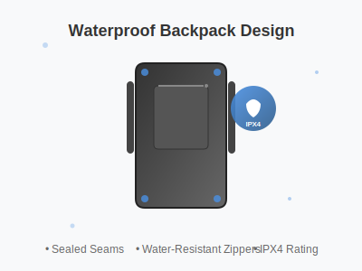

Complete Guide to Waterproof Backpack Testing Standards
Understanding Waterproof Standards
Waterproof backpack testing is crucial for ensuring product quality and customer satisfaction. This comprehensive guide covers the essential testing standards, methodologies, and certification processes that manufacturers must follow to produce reliable waterproof backpacks.
IP Rating System
The Ingress Protection (IP) rating system is the international standard for classifying the degree of protection provided by enclosures. For backpacks, the most relevant ratings are:
- IPX4: Protection against splashing water from any direction
- IPX5: Protection against water jets from any direction
- IPX6: Protection against powerful water jets
- IPX7: Protection against immersion in water up to 1 meter
- IPX8: Protection against continuous immersion in water
Testing Methodologies
Water Spray Test
This test simulates rain conditions by spraying water at various angles and pressures. The backpack is mounted on a rotating platform and subjected to water spray for a specified duration.
Immersion Test
For higher IP ratings, backpacks undergo immersion testing where they are submerged in water tanks at specific depths and durations to verify their waterproof capabilities.
Pressure Test
High-pressure water jets test the integrity of seams, zippers, and fabric under extreme conditions that might be encountered during outdoor activities.
Material Testing Standards
Fabric Waterproofing
Waterproof fabrics are tested using hydrostatic head measurements, typically requiring:
- Minimum 1,500mm for light rain protection
- 5,000-10,000mm for moderate to heavy rain
- 15,000mm+ for extreme weather conditions
Seam Sealing Quality
All seams must be properly sealed using waterproof tape or welding techniques. Testing includes:
- Seam strength testing
- Adhesion testing of seam tape
- Long-term durability assessment
Zipper Waterproofing Standards
Waterproof zippers are critical components that require specialized testing:
- Water penetration test: Measuring water ingress through closed zippers
- Durability testing: Repeated opening/closing cycles under wet conditions
- Corrosion resistance: Salt spray testing for marine environments
Quality Assurance Protocols
Pre-Production Testing
Before mass production, prototypes undergo rigorous testing including:
- Material compatibility testing
- Design validation
- Performance benchmarking
Production Quality Control
During manufacturing, regular quality checks ensure consistency:
- Random sampling and testing
- Process monitoring
- Final inspection protocols
International Certification Standards
ISO Standards
Relevant ISO standards for waterproof backpack testing include:
- ISO 811: Determination of resistance to water penetration
- ISO 4920: Determination of resistance to surface wetting
- ISO 9073-16: Water penetration test for nonwovens
ASTM Standards
American Society for Testing and Materials standards:
- ASTM D751: Standard test methods for coated fabrics
- ASTM F1670: Resistance of materials to penetration by synthetic blood
Testing Equipment and Facilities
Professional waterproof testing requires specialized equipment:
- Hydrostatic head testers
- Water spray chambers
- Immersion tanks
- Pressure testing equipment
- Environmental chambers for temperature/humidity control
Common Testing Challenges
Design Complexity
Modern backpacks with multiple compartments and features present unique testing challenges that require customized approaches.
Material Variations
Different materials and coatings may require specific testing protocols to ensure accurate results.
Real-World Conditions
Laboratory testing must simulate real-world usage patterns and environmental conditions.
Future Trends in Waterproof Testing
The industry is moving towards:
- Automated testing systems
- AI-powered quality analysis
- Sustainable testing methods
- Enhanced durability assessments
Conclusion
Proper waterproof testing is essential for manufacturing high-quality backpacks that meet customer expectations and industry standards. By following established testing protocols and maintaining rigorous quality assurance processes, manufacturers can ensure their products provide reliable protection in various weather conditions.
For manufacturers looking to implement comprehensive waterproof testing programs, partnering with experienced testing facilities and staying updated with evolving standards is crucial for success in the competitive backpack market.